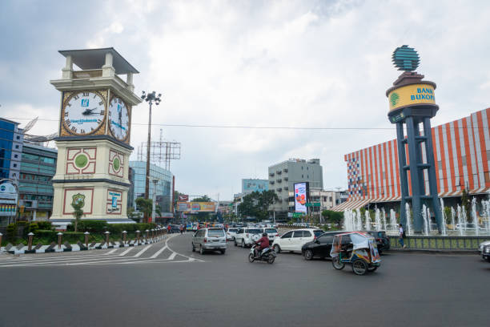

Selamat Datang di Kota Medan
Medan adalah kota terbesar di luar Pulau Jawa dan juga kota terbesar di Pulau Sumatera, ibu kota dan kota terbesar di Provinsi Sumatera Utara, Indonesia. Kota ini menjadi pintu gerbang wilayah Indonesia bagian barat dengan Pelabuhan Belawan dan Bandara Internasional Kuala Namu, yang merupakan bandara terbesar kedua di Indonesia. Medan juga merupakan kota perdagangan, industri, dan bisnis yang penting di Indonesia.